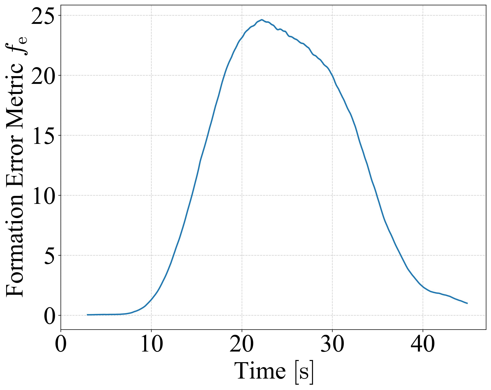

Real-World Experiments
1. Continuous Formation Navigation
Results & Metrics
Quantitative evaluation results include formation error metrics and lateral position. For the correspondence between WMR indices in the video above and those in the figures, see the WMR-Index tab.


2. Dynamic Obstacle Avoidance
Results & Metrics
Quantitative evaluation results include formation error metrics and lateral position (WMR 2 and WMR 3, whose y-trajectories change for obstacle avoidance), as well as the view from the motion capture system. For the correspondence between WMR indices in the video above and those in the figures, see the WMR-Index tab.
